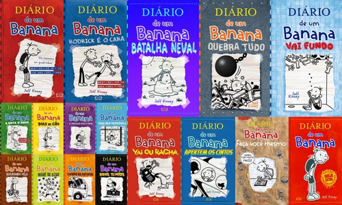
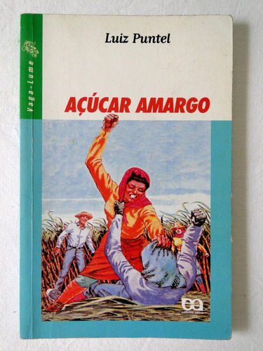
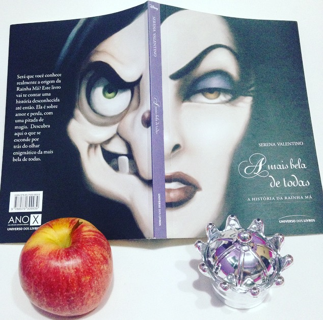

A série conta a história de Greg Heffley, um garoto pré-adolescente, que ganha um diário de sua mãe, onde ele começa a relatar os seus dias. Ao longo de cada história, são abortados temas como a relação com os amigos, a escola, a família, também fala de medos, inseguranças, conflitos e todos os assuntos que envolvem a vida "nada fácil" de um garoto nessa idade
Fora que esse livro, em cada edição, traz um assunto diferente e sempre de maneira lúdica e engraçada, o que deixa a leitura mais agradávcel para os leitores de diferentes idades.
Açucar Amargo, livro de Luiz Puntel é uma homenagem a várias mulheres que perderam a vida ou se dedicaram a lutar pelos direitos dos boias-frias. A história é baseada em fatos da vida real
A livro relata a trajetória de Marta e sua família, que tocava uma lavoura em Catanduva, interior de São Paulo. Depois dos planos de instalação de uma usina de cana onde moravam, eles são obrigados a deixar a fazenda, chegando a cidade de Guariba.
Em meio à luta por seus direitos, enquanto mulher e trabalhadora do campo, Marta enfrenta o preconceito em em casa, no trabalho e, consequentemente,a sociedade. Ela tenta seguir sua rotina, e via no estudo a única oportunidade de um futuro melhor.
Humilhações, tragédias, exploração, ciúmes, amizade... O desespero da personagem principal em provar que era tão capaz como qualquer homem. Todos esses ingredientes misturados a uma história de amor, faz de Açucar Amargo um livro triste, que conta com veracidade a luta pela reforma agrária dos boias-frias.
A Mais Bela de Todas não conta apenas a história da Rainha que foi chamada de “Má”, mas sim promove uma investigação sobre a opressão da beleza feminina.
Escrita por Serena Valentino, o livro faz parte de uma série que conta a história particular dos personagens da Disney. Mostrando como eles eram antes de serem considerados vilões
Lendo o livro, você conclui que a Rainha não era Má, mas sim uma pessoa meiga. Ela amava Branca de Neve e a criava como se fosse sua filha. Mas a necessidade de ser a mais bela de todas começa a colocá-la contra sua família. Essa luta é simbolizada pelo espelho. O Rei deu de presente à esposa um relicário produzido pelo pai dela como presente de casamento, mas a Rainha não suportava ver o artefato tanto por ele lembrá-la o pai como pelo vulto que aparecia nele
A autora, Paula Pimenta, tenta se representar através da personagem, trazendo histórias da sua adolescência para a vida de Priscila, que é a narradora do enredo.
Minha vida fora de série é um livro que te inspira e que te faz descobrir sua paixão por livros, pois é uma leitura fácil e viciante, faz você se sentir ao lado da personagem, como se você vivesse toda a história contada. Em falas mais claras: te faz querer gritar, aconselhar e resolver todas as controvérsias que o livro tem. Te obriga a ler todas as folhas de todas as temporadas e ainda sim ter sede de leitura.
O livro “28 mentes que mudaram o mundo”, retrata a história de marcas conhecidas mundialmente, como a Apple, Amazon, Intel e grandes personalidades que por algum motivo mudaram o cenário de seus países e do mundo.
Em cada capítulo um novo “desbravador da gestão” é apresentando, termo esse, que o próprio livro coloca, por terem causado um impacto importante na humanidade. Relatando um pouco da sua história de vida, origem da marca ou como e porquê aquele desbravador impactou a sociedade. Além de expor algumas críticas que rodeiam essas pessoas.